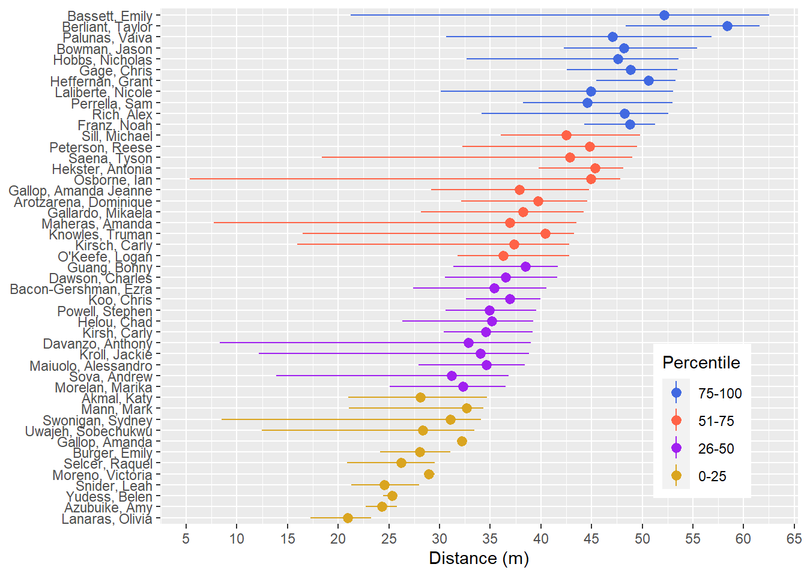
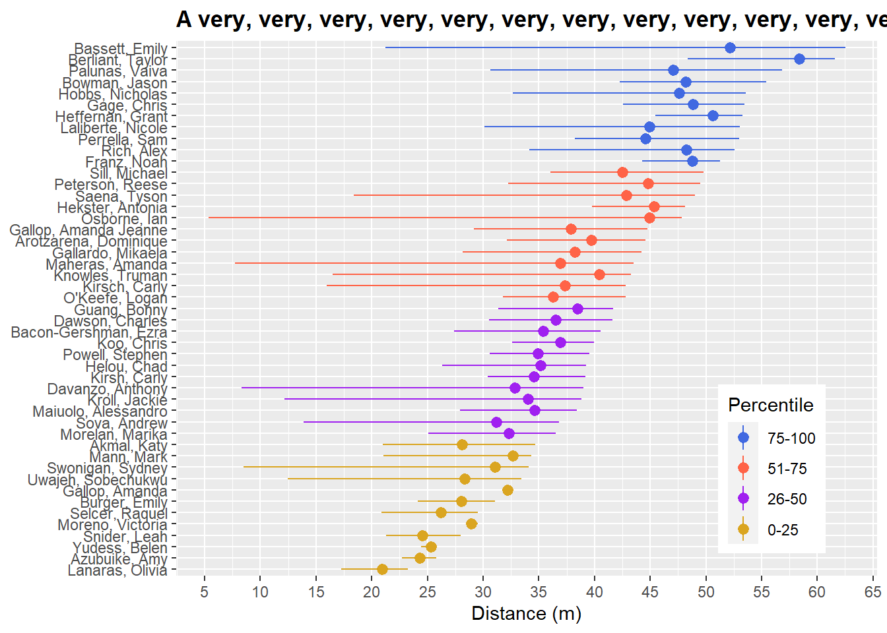
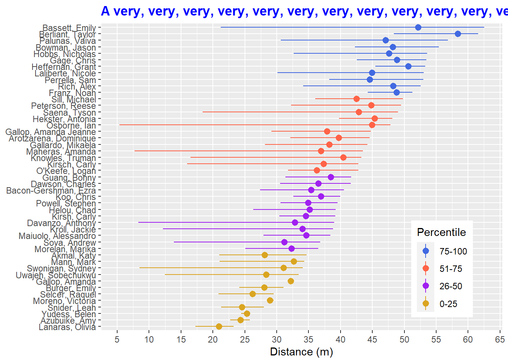
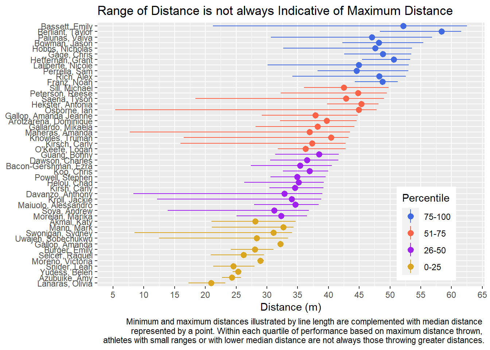
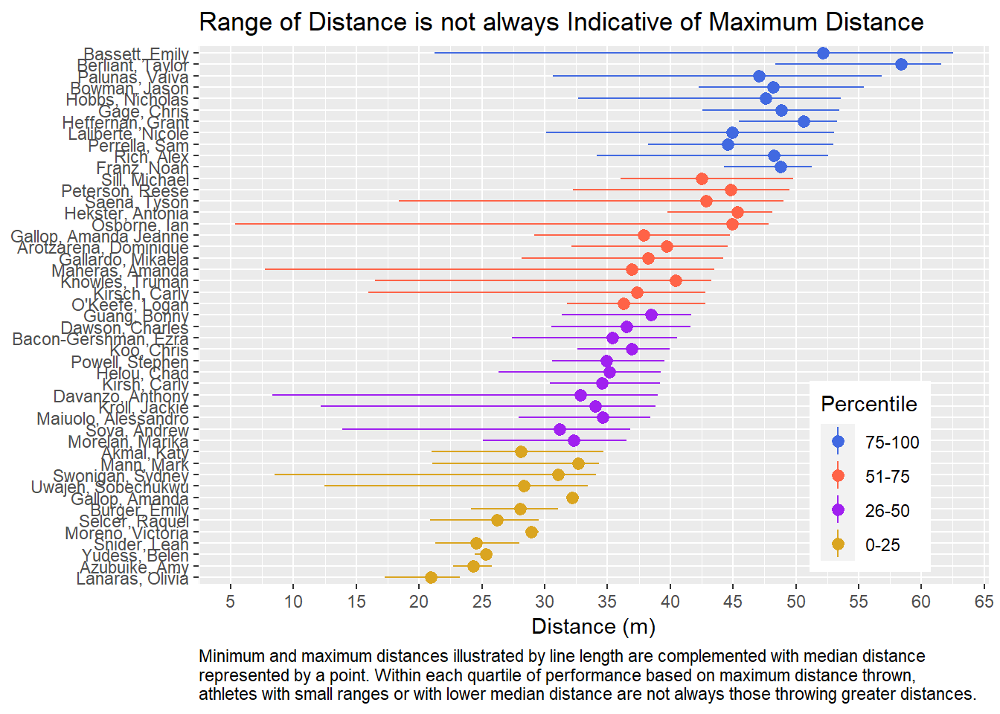
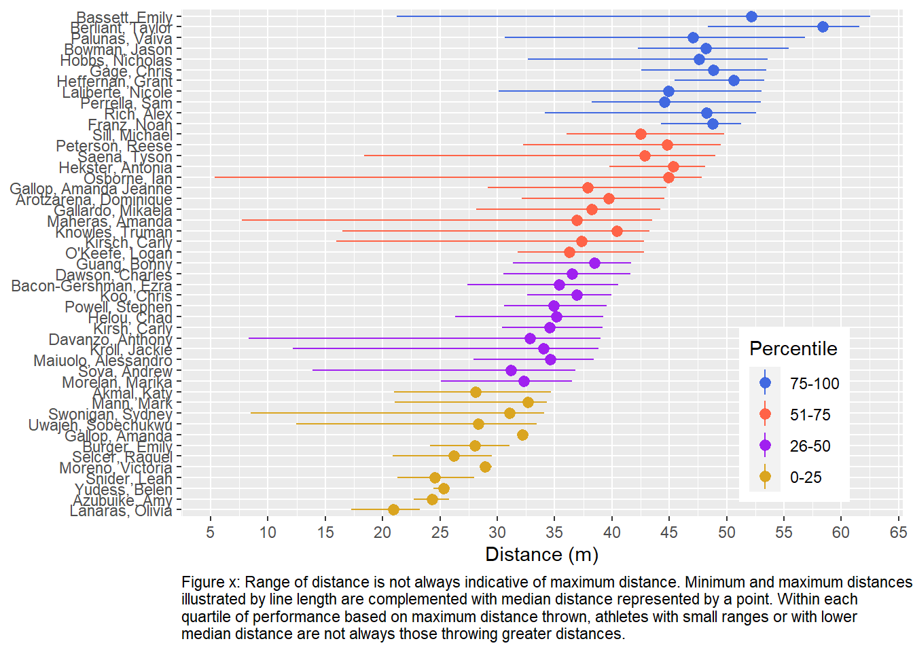
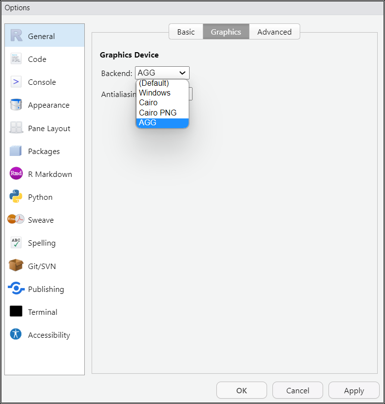

source(here::here("r", "my_functions.R"))
source("https://raw.githubusercontent.com/slicesofdata/dataviz23/main/R/functions/describe.R")Defining describe.RDone Defining describe.RGabriel I. Cook
November 30, 2023
This page is a work in progress and may contain areas that need more detail or that required syntactical, grammatical, and typographical changes. If you find some part requiring some editing, please let me know so I can fix it for you.
Every data visualization has a purpose, which is to offer a visual representation of data. The visualization serves as an actor in the overall story of data. A visualization’s effectiveness relies on its ability to convey a finding and communicate some important element or point to an audience. The type of visualization should be chosen purposefully based on ease of processing and interpretation. There are other actors, however. For example, the title, figure caption, annotations, labels, legend, which are also important. This messaging plays an important role in communicating the meaning of those data and to reduce misinterpretation.
The title will play a role in dressing up the plot and contextualizing it. By dressing up, or accessorizing, the plot, we do not mean to improve the aesthetics of the visualization but rather to leave no ambiguity as to the message and intent. Consider the following analogy. A button-up long-sleeved shirt paired with slacks communicate some information about where a person might be going to or coming from. A tie, coat, belt, and shoes will contextualize the scene quite differently. Still yet, a bow tie, coat, cumber bun, and black shoes will provide a different set of expectations. There are few places one will go dressed in a tuxedo. The same is true for data visualizations. The data presented in the form of bars, lines, points, tiles, or otherwise should serve to communicate something meaningful. Proper accessorizing with a clear title, subtitle, and relevant legend or caption will contextualize the plot and leave little ambiguity of its intent. This module is about contextualizing plots with accompanying titles, captions, and other annotations to guide the reader to extract particularly relevant information.
Reading should take place in two parts:
Before Class: First, read to familiarize yourself with the concepts rather than master them. Understand why one would want to visualize data in a particular way and also understand some of the functionality of {ggplot2}. I will assume that you attend class with some level of basic understanding of concepts.
Class: In class, some functions and concepts will be introduced and we will practice implementing {ggplot2} code. On occasion, there will be an assessment involving code identification, correction, explanation, etc. of concepts addressed in previous modules and perhaps some conceptual elements from this week’s readings.
After Class: After having some hands-on experience with coding in class, homework assignments will involve writing your own code to address some problem. These problems will be more complex, will involving problem solving, and may be open ended. This is where the second pass at reading with come in for you to reference when writing your code. The module content presented below is designed to offer you some assistance working through various coding problems but may not always suffice as a replacement for the readings from Wickham, Navarro, & Pedersen (under revision). ggplot2: Elegant Graphics for Data Analysis (3e).
Provided in class:
view_html(): for viewing data frames in html format, from /r/my_functions.R
You can use this in your own work space but I am having a challenge rendering this of the website, so I’ll default to print() on occasion.
Visualizations should contain titles. We have used functions to add words to plots in places were titles would go but until now we have not addressed the significance of a title or how to create one.
The title is used to precisely and accurately communicate the main point of the visualization. After all, the visualization was created and selected for a particular purpose. What is that purpose? Make that purpose clear in your title. Are you communicating key differences across groups? If so, communicate them. Are you illustrating a trend or association? If so, make that clear. Are you showcasing similarities in trends or in shapes of distributions? If so, highlight them in your title. Are you differentiating trends, associations, or distribution shapes across groups? If so, direct your audience to examine those differences in the title.
Remember, you should not be selecting geoms and creating data visualizations that look aesthetically pleasing without considering whether that visualization is the best for your communication goals. Whatever that key finding is that you are trying to communicate, you should make that a part of your title. If you are communicating differences in average performance or in the range of data, is a sina plot necessary? If you are communicating differences in shapes of distributions, is a point-range plot relevant or bar plot a good choice? The geometric choice and the title need to match the goal of the data being visualized.
Now that you have a title, you have to determine where to place it. The location of the title is independent of its intent. Yes, tiles are often positioned above the graphical representation of data. Perhaps they are centered or even left or right justified. Data visualizations that appear on webpages, in newspapers or magazines, or serve as isolated info-graphics (without explanatory text) will typically contain titles in these locations. Titles may appear inside the plot space or even positioned below the plot in a caption position as your might find in books, journals, or scientific pieces. The title type does not make a visualization more professional than another; location may simply align with formatting standards of the medium within which you place the visualization.
For visualizations appearing in reports, papers, journals, etc., for which a figure caption is relevant, ensure placing the title before the caption. If the title is not placed in the caption, then there will not be a title. And yes, visualizations need titles.
Finally, follow the title with a more clear and detailed description of the data presented. If the title highlights the key difference and the caption addresses less significant but nevertheless relevant nuances. If there are no other meaningful messages, you can be more detailed about the main message.

By now, you know how to add a title. One way is with labs().
\nOne way to deal with long titles is to break up the text
If you have an HTML formatted title, you will need to use breaks rather than new lines.
stringr::str_wrap()If you prefer not finding a place to insert a new line or a break, user str_wrap() from {stringr}. By setting width to a value represent the number of characters, str_wrap() will break up the string into pieces that do not exceed the width. You will want to adjust the width to be appropriate given your plot output dimensions. More on saving plots of given dimensions later.
Although this approach is fine with element_text(), it seems compromised with element_markdown(). I have not had time to discover a work around.
plot +
labs(title = stringr::str_wrap(my_title, width = 20)) +
theme(plot.title = element_markdown(face = "bold"))
plot +
labs(title = stringr::str_wrap(my_title, width = 20)) +
theme(plot.title = element_markdown(face = "bold"))And element_markdown() is how you process the HTML code.
my_html_title <- '<span style="color:blue">A very, very, very, very, very, very, very, very, very, very, very, very, very, very, very, very, very, very, long title</span>'
plot +
labs(title = stringr::str_wrap(my_html_title, width = 40)) +
theme(plot.title = element_markdown(face = "bold"))
If you are passing HTML code to the text (e.g., you are using direct labeling of color), you may need to use the
The figure caption is where you communicate a more detailed description of the data than what the title communicates alone.
my_title <- "Range of Distance is not always Indicative of Maximum Distance"
my_caption <- "Minimum and maximum distances illustrated by line length are complemented with median distance \nrepresented by a point. Within each quartile of performance based on maximum distance thrown, \nathletes with small ranges or with lower median distance are not always those throwing greater distances."
plot +
labs(title = my_title,
caption = my_caption
)
You see that the figure caption is justified to the right.

This looks good about right for the caption.
my_full_caption <- "Figure x: Range of distance is not always indicative of maximum distance. Minimum and maximum distances \nillustrated by line length are complemented with median distance represented by a point. Within each \nquartile of performance based on maximum distance thrown, athletes with small ranges or with lower \nmedian distance are not always those throwing greater distances."
plot +
labs(col = "Percentile",
title = NULL, # make sure to remove title
x = NULL,
y = "Distance (m)",
caption = my_full_caption
) +
theme(plot.title = element_text(face = "bold"),
plot.caption = element_text(hjust = 0)
)
This looks good for the title and the caption.
Modifying fonts is achieved by changing the family element of element_text() for each plot component. We can do this for the title, subtitle, and axis components.
There are a few ways to manage custom fonts. You can use {showtext} to download custom font binaries and access them. Managing fonts, however, is beyond the scope of this topic.
A good option is to use {ragg}, which provides graphic devices for R based on the AGG (anti-grain geometry) library. Why use the AGG device?
First, install the {ragg} library.
In RStudio, navigate to the Tools menu item and then navigate the drop down to Global Options. Click the Graphics tab on the top and set your Graphics Device back end to AGG.

Load the library in your R Markdown file
You can also set the device in your global option settings for your R Markdown file by adding this before your first code block: knitr::opts_chunk$set(dev = "ragg_png"). You can make changes within a code block too but I don’t know why you would want to use different devices.
Within theme(), you can set the fonts for different elements. Here we change the title, subtitle, axis titles, and axis text.
There are different ways to save plots but using ggsave() may be the easiest. It will use your system graphics device settings. If you change that device in your global settings, that device will be used for your plots. You can also specify the device in ggsave().
device = ragg::agg_pngIf you have saved plots that you wish to call into your R Markdown file, the easiest way will likely be to use knitr::include_graphics(). Using {here} to assist with access the project and within which /figs directory, we can specify it all for the path.
knitr::include_graphics(path = here::here("figs", "my_plot.png"))By default, the alignment will be left. You can change the alignment in the {r} code chunk by setting fig.align to fig.align = 'center' or fig.align = 'right'.
Example:
{r fig.align = 'center'}
knitr::include_graphics(path = here::here("figs", "my_plot.png"),
dpi = 320
)
To change the size you can change:
fig.width = 7.7 or some other number of inchesfig.height = 6out.width="50%" or some other percentout.height="50%"Example:
{r fig.align="center", out.width="90%"}Example:
{r fig.align="center", fig.width = 7.78}If you wish to add R code at the top of your R Markdown file, you can set the options for all chunks using opt_chunk. This way, all plots will take the same settings unless the specific code block in which the plot is rendered so defined otherwise.
For example:
knitr::opts_chunk$set(
fig.width = 6,
fig.asp = 0.8,
out.width = "80%"
)You may not understand all of the differences between image file formats but you are likely familiar with image file extensions like .jpg (Joint Photographic Experts Group), .png (Portable Network Graphics), pdf (Portable Document Format), or XML-based scalable vector graphics files like .svg.
You can read more in Wilke’s Data Visualization book or in Peng’s Exploratory Data Analysis book.
Raster: Constructed by a series of pixels (e.g., JPEG, GIF, and PNG)
Vector: Constructed using proportional formulas rather than pixels; they are great when when they need to be resized, for example a logo that would appear on a business card or a billboard) (e.g., EPS, AI and PDF)
Vector formats like .pdf and .svg may be good for line drawings and solid colors (bars) but they are less familiar by some and you might not be able to get someone to load them someplace.
Raster or Bitmap formats like .png (and .jpg but stay away from it) are generally good for visualization many number points and are good for embedding on web pages. This is likely your go-to. Whatever you do, don’t save your plots image files as .jpg. Your best option will be to use .png for its portability. You could use .pdf and convert them as needed but that will require other steps. I recommend just saving as ragg::png file.
R version 4.3.1 (2023-06-16 ucrt)
Platform: x86_64-w64-mingw32/x64 (64-bit)
Running under: Windows 11 x64 (build 22621)
Matrix products: default
locale:
[1] LC_COLLATE=English_United States.utf8
[2] LC_CTYPE=English_United States.utf8
[3] LC_MONETARY=English_United States.utf8
[4] LC_NUMERIC=C
[5] LC_TIME=English_United States.utf8
time zone: America/Los_Angeles
tzcode source: internal
attached base packages:
[1] stats graphics grDevices utils datasets methods base
other attached packages:
[1] ggtext_0.1.2 geomtextpath_0.1.1 ggplot2_3.4.3 magrittr_2.0.3
[5] dplyr_1.1.2
loaded via a namespace (and not attached):
[1] gld_2.6.6 gtable_0.3.4 xfun_0.40 htmlwidgets_1.6.2
[5] lattice_0.21-8 monochromeR_0.1.4 vctrs_0.6.3 tools_4.3.1
[9] generics_0.1.3 tibble_3.2.1 proxy_0.4-27 fansi_1.0.4
[13] pkgconfig_2.0.3 Matrix_1.6-1 data.table_1.14.8 readxl_1.4.3
[17] lifecycle_1.0.3 rootSolve_1.8.2.4 compiler_4.3.1 farver_2.1.1
[21] stringr_1.5.0 textshaping_0.3.6 Exact_3.2 munsell_0.5.0
[25] htmltools_0.5.6 DescTools_0.99.50 class_7.3-22 yaml_2.3.7
[29] pillar_1.9.0 MASS_7.3-60 boot_1.3-28.1 commonmark_1.9.0
[33] tidyselect_1.2.0 digest_0.6.33 stringi_1.7.12 mvtnorm_1.2-2
[37] forcats_1.0.0 rprojroot_2.0.3 fastmap_1.1.1 grid_4.3.1
[41] here_1.0.1 colorspace_2.1-0 lmom_3.0 expm_0.999-7
[45] cli_3.6.1 utf8_1.2.3 e1071_1.7-13 withr_2.5.0
[49] scales_1.2.1 rmarkdown_2.24 httr_1.4.7 cellranger_1.1.0
[53] ragg_1.2.5 png_0.1-8 moments_0.14.1 evaluate_0.21
[57] knitr_1.43 markdown_1.8 rlang_1.1.1 gridtext_0.1.5
[61] Rcpp_1.0.11 glue_1.6.2 xml2_1.3.5 rstudioapi_0.15.0
[65] jsonlite_1.8.7 R6_2.5.1 systemfonts_1.0.4